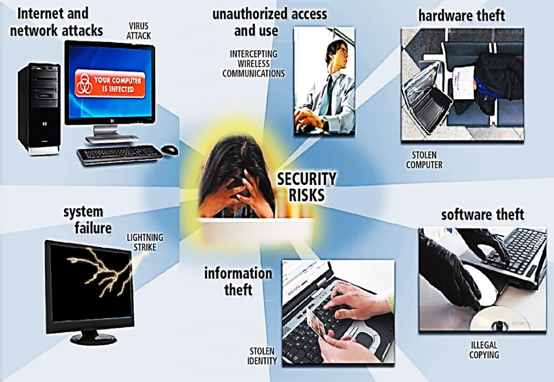

Qn6. State any five computer security threats

Qn7. State any five causes of information system failure
Qn8. Suggest any five control measures against hardware failure
Qn9. Differentiate between hardware theft and hardware vandalism
Hardware theft is act of stealing computer equipment WHILE Hardware vandalism is the act of defacing or destroying computer equipment
Qn10. Define the following terms as used in software security
a. Software theft
Software theft is the act of stealing or illegally copying software or intentionally erasing programs
b. Software piracy
Software piracy is illegal duplication of copyrighted software.
c. Product activation
Product activation allows user to input product identification number online or by phone and receive unique installation identification number.
d. License agreement
A license agreement gives the right to use software.